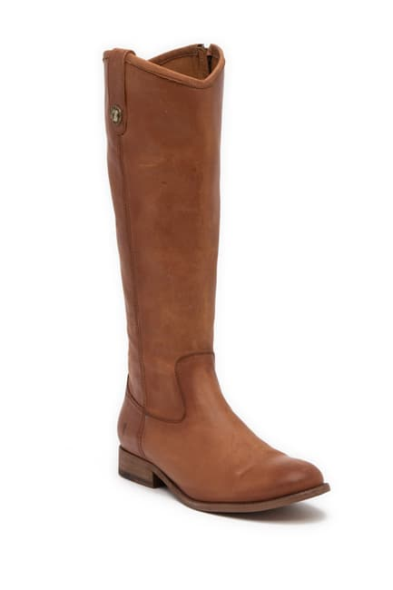
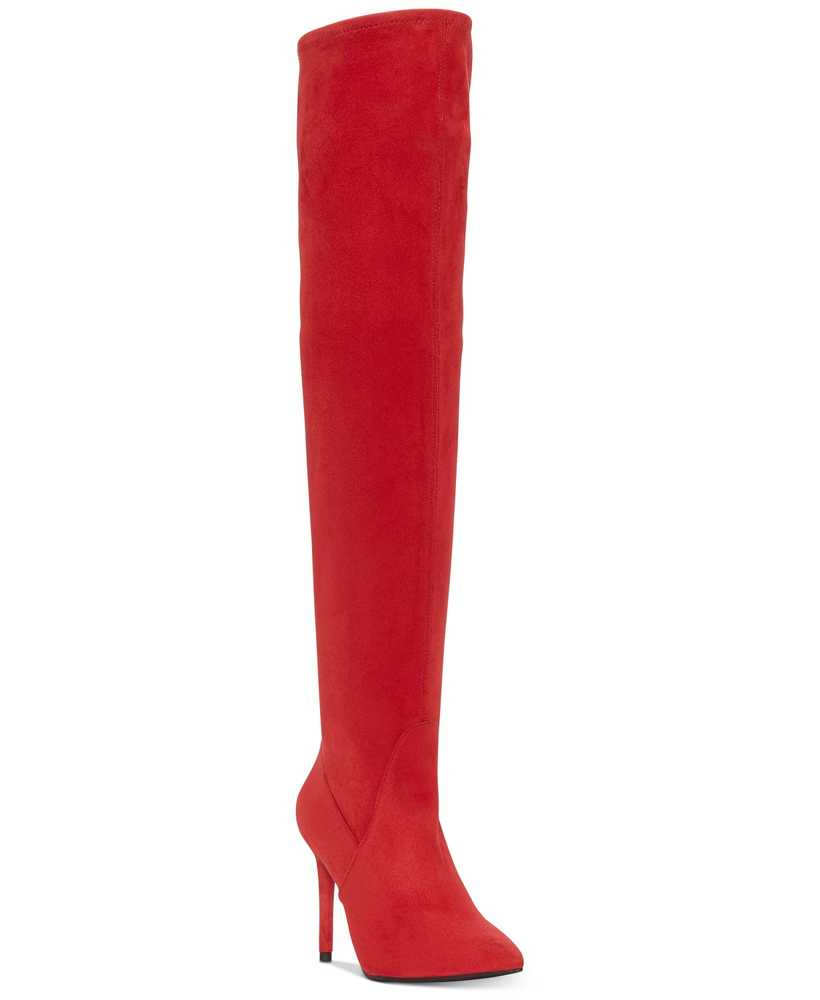
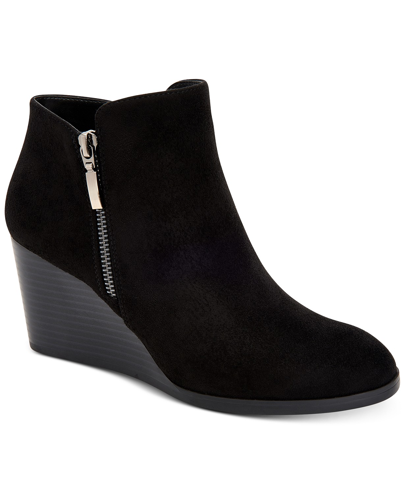
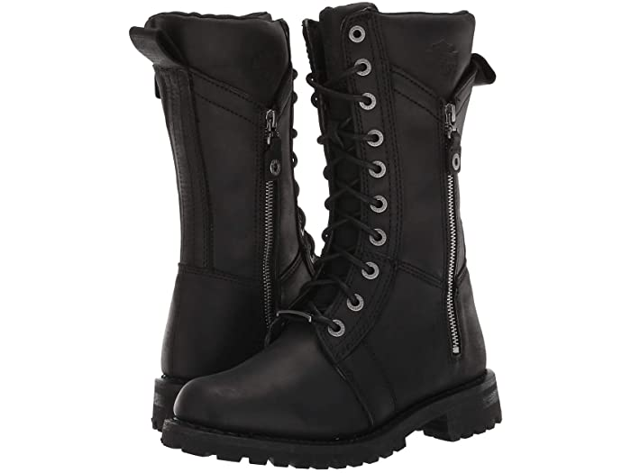
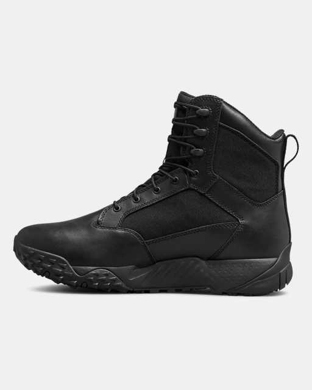
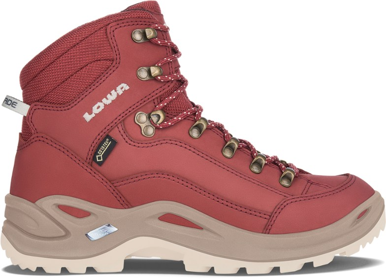
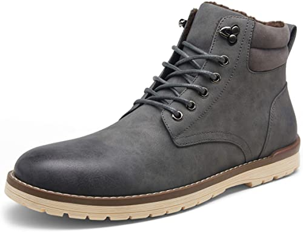
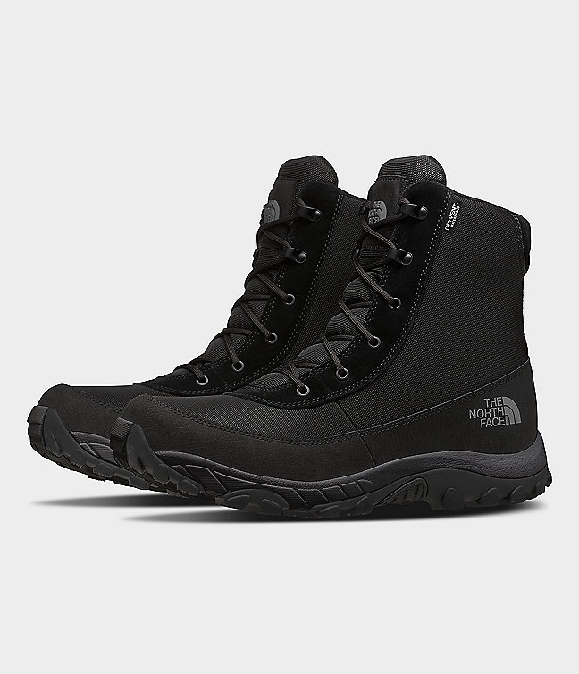
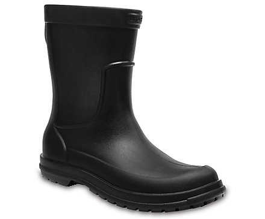

Tall
Brand: Frye

Features
- Inside zipper
- Round toe
- Top stiched details
- Stacked Heel
- Lightly padded footbed
Purpose: To make a milder fashion statement.
Sizes: 6M - 10M
Material: Leather ,and a mandmade sole
Website: www.Nordstromrack.com
Over-the-knee
Brand: Livelle stretch Boots

Features
- 4" stiletto heel
- Partial zipper closure
- Pointed toe
- Rubber sole
- Microsuede material
Purpose: To stand out as a fashion statement.
Sizes: 5M - 7M
Material: Microsuede manmade, manmade lining, and rubber
Website: www.macys.com
Wedge
Brand: Style & Co Wynonaa wedge

Features
- 2-1/2" heel
- round toe booties
- Side zipper closure
- Assymetrical topline
Purpose: Fashionable footwear with a solid heel.
Sizes: 5M - 8.5M
Material: Microsuede, and rubber sole
Website: www.macys.com
Moto
Brand: Harley-Davidson Harnett

Features
- Full grain leather upper
- Lace-up styles with fabric laces and metal eyelets
- Outside pocket
- Breathable mesh lining
- Cushioned textile footbed
Purpose: To protect your feeat and ankles from hot pipes and friction while riding a motorcycle.
Sizes: 5M - 9M
Material: full grain leather, rugged rubber
Website: www.zappos.com
Combat
Brand: UA Stellar Tac

Features
- Quick-dry material
- High traction rubber sole
- Waterproof boot liner
- Minimalist design
Purpose: All purpose footwear to protect your feet in Harsh environments.
Sizes: 8 - 14
Material: Leather, and 900D Nylon textile
Website: www.underarmour.com
Hiking
Brand: Lowa Renegade GTX Mid

Features
- Waterproof GORE-TEX liners
- Water-repelleant nubuck leather
- Nylon shanks for support
Purpose: All-purpose footwear to protect your feet in harsh terrain.
Sizes:6 - 11
Material: nubuck leather, polyester, polyurethane, nylon
Website: www.rei.com
Ankle
Brand: Vostey

Features
- Retro fashion color
- Waxing shoelaces
- Firm stitching
- Natural rubber outsole
- Soft shoe mouth
Purpose: Fashionable boots.
Sizes: 8 - 13
Material: Synthetic leather, rubber sole
Website: www.amazon.com
Winter
Brand: The North face Men's Chilkat Nylon

Features
- Waterproof Construction
- Rustproof Hardware
- Temperature sensitive rubber
- Molded EVA midsole
- Insulation for exeptional warmth
Purpose: Keeps your feet warm, and supported in cold, harsh terrain.
Sizes:7,8,10,12.5
Material: Ballistic Nylon, and rubber
Website: www.thenorthface.com
Rain
Brand: Crocs men's Allcast

Features
- Fully molded construction
- Waterproof
- Lightweight Comfort
Purpose: Used to keep your feet dry in the wettest conditions.
Sizes: 7 - 13
Material: Rubber
Website: www.crocs.com